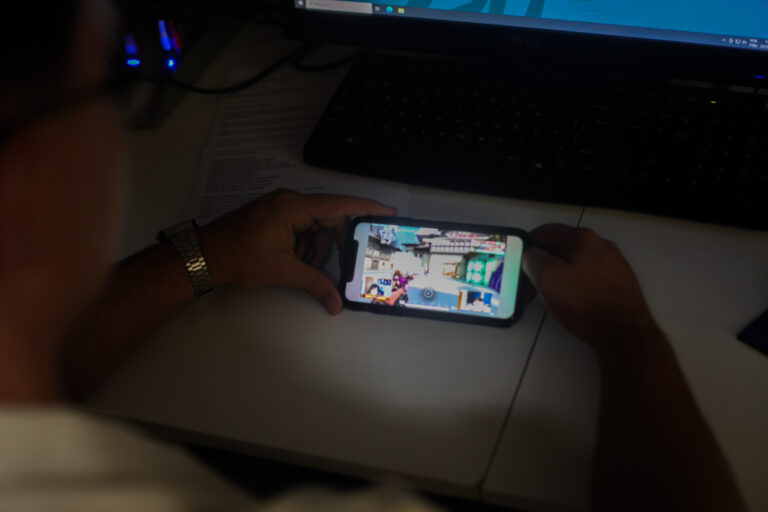

Uso excessivo de telas está associado à saúde mental de diferentes gerações

O uso excessivo de telas está ligado a uma piora da saúde mental de seus usuários,
independentemente da idade, segundo mostra tese defendida no Programa de Pós-Graduação
em Medicina Molecular da Faculdade de Medicina da UFMG. Os resultados mostraram, de forma
inesperada, a presença da nomofobia (medo de ficar longe do celular) em idosos. Além disso,
dos estudos que avaliaram as crianças, 72% deles encontraram aumento da depressão associado
ao uso excessivo de telas.
Por: Vitor Pepino
Ler mais
Bem-estar digital: por que é essencial ter uma relação saudável com a tecnologia

Entenda o conceito de bem-estar digital e a importância do uso saudável da tecnologia e
telas de dispositivos para evitar problemas como ansiedade
Ler mais
Bem-estar digital: como equilibrar saúde e tecnologia

Se você contasse o tempo que passa em frente a uma tela e teclado,
acha que seriam muitas horas diárias? Já sentiu dores ou desconforto
físico por estar sentado, em atividades de digitação e concentração,
com os olhos vidrados no computador ou celular? Confere o smartphone
constantemente? Fica incomodado se não estiver conectado? Se respondeu
SIM a qualquer das perguntas, então o assunto de hoje – o bem-estar digital – é para você.
Por: Marcia Costa
Ler mais